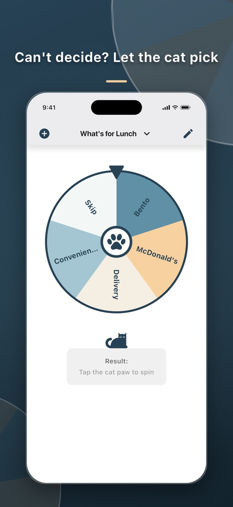
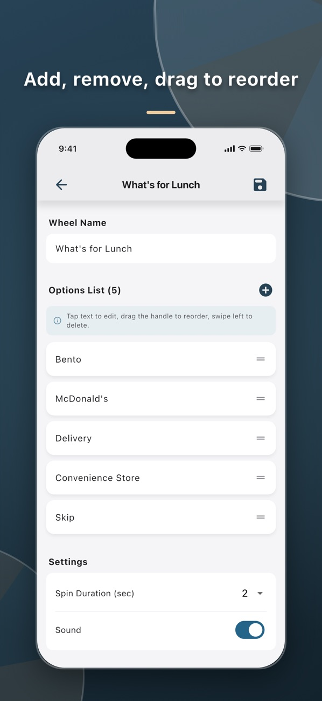
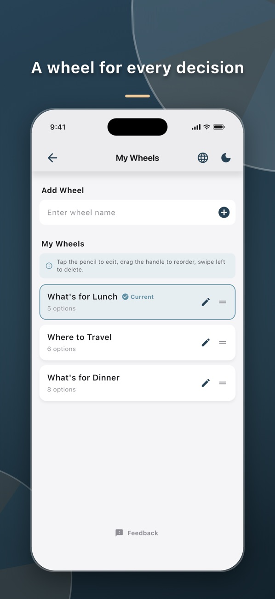

MeowWheel: can't decide? Let the cat wheel choose
Spent ten minutes deciding on lunch? Put the options on a wheel, tap the cat paw and go with whatever it lands on. It works for dinner, trip ideas and who takes out the trash, too.
Free on the App StoreiPhone (iOS 15 or later) and Apple Watch · Android on Google Play



MeowWheel at a glance
- Use it for
- What to eat, where to go, who does the chores, turn order at parties
- Wheels
- Make as many wheels as you like; add, edit and reorder options on each
- Built in
- Lunch, dinner and travel wheels ready to spin
- Devices
- iPhone (iOS 15 or later), Apple Watch, Android
- Price
- Free with ads; remove ads with a one-time purchase
How to use MeowWheel
There are ready-made wheels the first time you open it.
Pick a wheel
Start with the built-in lunch, dinner or travel wheel, or make your own.
Add options
Add restaurants, places or names, then edit and reorder them.
Tap the paw
Tap the cat paw, the wheel meows and spins, and wherever it stops is your answer.
What MeowWheel does
Simple to use and easy on the eyes.
- Multiple wheelsOne for food, one for trips, one for chores. Switch any time.
- Edit optionsAdd, edit and reorder options. Tired of a place? Swap it out.
- A meow on every spinA cat sound plays as the wheel spins.
- Soft colorsMuted Morandi colors that are easy on the eyes.
- Apple WatchSpin from your wrist without taking out your phone.
Price
Free to download, with ads. To go ad-free, make a one-time Remove Ads purchase, not a subscription. On a new phone, tap Restore Purchases in the app.
FAQ
Is MeowWheel free?
Yes, it's free to download and use, with ads. You can remove ads with a one-time purchase.
Can I add my own options?
Yes. Add, edit and reorder options on any wheel, and make as many wheels as you need.
What else can I use it for?
Trip ideas, weekend plans, who does the dishes, turn order at parties. Anything you need to decide.
Is there an Android version?
Yes, MeowWheel is on Google Play. Use the link on this page.
Does it work on Apple Watch?
Yes. The iPhone app includes an Apple Watch app, so you can spin from your wrist.
More apps by H.C
- Truth or DareSpin to pick a player, with 2,000+ truths and dares.
- CharadesPhone on your forehead while friends act it out.
- QuickKeySave phrases once and insert them with one tap in any app.